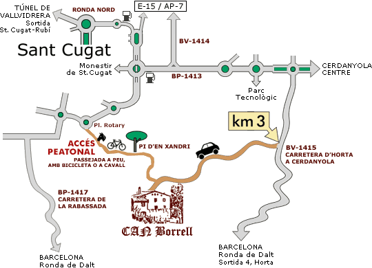

GPS:
LONGITUD:
E 02º 07' 22"
LATITUD:
N 41º 27' 56"
GPS:
Punto de interés:
Restaurantes:
Restaurant Masia
Can Borrell
|

Carretera d'Horta a Cerdanyola (BV-1415), km 3 - 08171 Sant Cugat del Vallès
Dirección postal:: Camí de Can Borrell, s/n - apt. 99 - 08171 Sant Cugat del Vallès
|
Como llegar
- Desde Sant Cugat se llega a pie o en bicicleta desde la Pl. Rotary.
- Desde Cerdanyola del Vallès se llega en vehículo en 15 minutos por la ctra. de Cerdanyola en Horta. Después camino de pista hasta llegar al restaurante.
- Desde Barcelona se llega:
- En vehículo por la ctra. del Velòdrom d'Horta (30 minutos).
- En transporte público con los FGC desde la estación de Sant Cugat a pie hasta la
Pl. Rotary y después haciendo la excursión hasta el restaurante por la pista forestal B06, pasando por el Pi d'en Xandri.
|
|